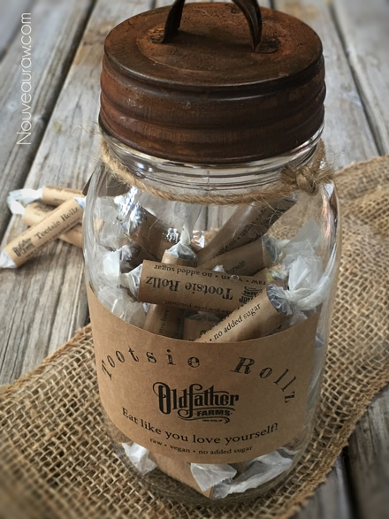
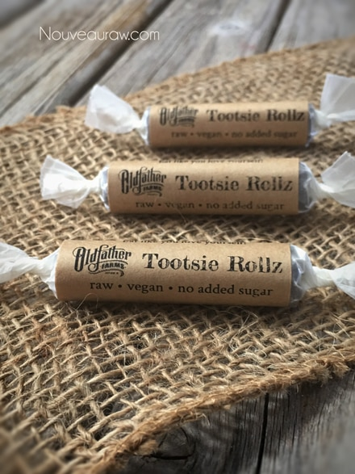
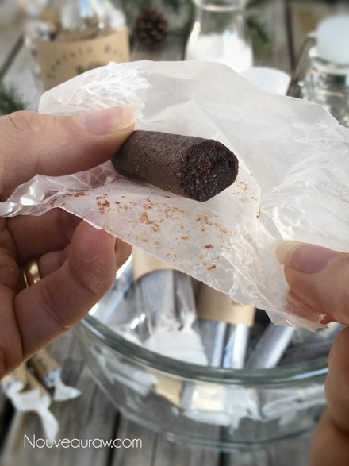
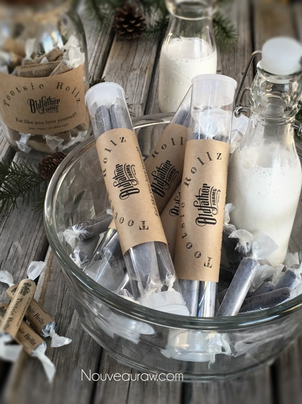
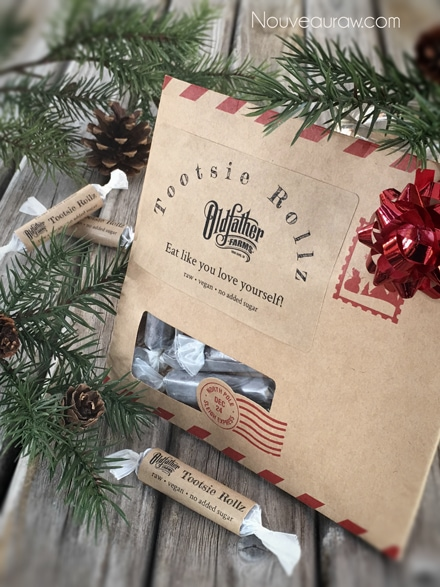
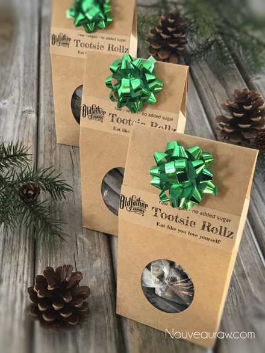

Tootsie Rollz

~ raw, vegan, gluten-free, nut-free ~
These individually-wrapped, bite-sized candies have a perfectly balanced taste of raw cacao (chocolate), lined with a subtle, Medjool date undertone.
You can control the richness of the chocolate-based on how much or little you. I found the perfect flavor profile that I was aiming for. For you, you might want less or more. That is the beauty of creating food from scratch. You have ultimate control in creating a taste just for you.
It’s amazing that it only took 3 ingredients to create that Tootsie Roll flavor. Texturally, this candy is semi-firm and chewy… which was exactly what I was aiming for.
Helpful tips when creating these candies is to use “dry” date paste. I know that sounds a bit confusing so let me explain. When creating the date paste, use the least amount of water needed when getting it to that creamy smooth texture. I provided a link below on how I make my date paste, please review it.
I mentioned above that we want the date paste creamy smooth. There is a reason… if the date paste has bits of chunks in it, the batter will clog up the piping tip when making the candy.
Packaging Ideas:
You can check your local department stores for containers, bags, and jars. If you plan on using sticker labels on the jars, make sure that one side of the jar is smooth so the label can stick smoothly. To add a little rustic flair to the overall look, I like to add in some twine. For the labels, I made those in my Photoshop program, nothing fancy. If you scroll down the bottom of the posting, I took some more pictures of other ways that I packaged these candies for gift giving.
Yields roughly 36 (2”) candies
Preparation:
Create the candy batter:
- Remove the pits from the dates as you put them in the measuring cup.
- Be sure to inspect each date as you tear it in half to remove the pit. Mold and insect eggs can infect dried dates. I don’t mean to gross you out, you just need to be made aware of this.
- Place the date paste, cacao, and salt in the food processor fitted with the “S” blade. Process until it turns into a creamy paste.
Fill the piping bag:
- I used the piping tip Ateco #808.
- While holding the bag with one hand, fold down the top with the other hand to form a cuff over your hand.
- Fill the bag 1/2 full. If you overfill the bag, the excess batter may squeeze out the wrong end not to mention that you will have less control of the bag when piping.
- Close the bag by unfolding the cuff and twisting the bag closed. This forces the batter down into the bag.
- “Burping” the bag: Make sure you release any air trapped in the bag by squeezing some of the batter out of the tip into the bowl. This is called “burping” the bag.
Piping:
- Hold the piping bag tip about 1/4″ above the reflex sheet, at a 22.5-degree angle, and slowly guide the lines of batter down the sheet. Don’t hold it too high or you will create a squiggly line.
- Keep constant pressure on the piping bag as you squeeze out the paste. This will ensure an even thickness of the line.
- After each completed line of batter, stop and retwist the piping bag, working all paste towards the tip. This will eliminate air bubbles in the bag and give you a solid grip.
- Remember: It doesn’t have to be perfect. Just have fun and if you make a mistake, scoop it up, place back in the bag and do it again.
Dehydrate & store:
- Place the tray in the dehydrator and dry at 145 degrees (F) for 1 hour, then reduce to 115 degrees (F) for 16-24 hours.
- Once they are dry enough, cut them into the desired lengths.
- Option: Toss them in a bowl with your choice of flour. Be gentle through this process. Place the coated candies into a mesh strainer and lightly tap the strainer into the bowl, allowing the excess flour to shake off.
- Or wrap each piece in wax paper, it all depends on the size of candy that you are creating.
- Store in a mason jar with a lid. I keep mine in the fridge for freshness.

Culinary Explanations:
- Why do I start the dehydrator at 145 degrees (F)? Click (here) to learn the reason behind this.
- When working with fresh ingredients it is important to taste test as you build a recipe. Learn why (here).
- Don’t own a dehydrator? Learn how to use your oven (here). I do however truly believe that it is a worthwhile investment. Click (here) to learn what I use.
Substitutions:
One of the greatest joys when creating raw food recipes is experimenting with different ingredients… a practice that I highly encourage. Daily I get questions regarding substitutions. Of course, we all might have different dietary needs and tastes which could necessitate altering a recipe. I love to share with you what I create for myself, my husband, friends, and family. I spend a lot of time selecting the right ingredients with a particular goal in mind, looking to build a certain flavor and texture.
So as you experiment with substitutions, remember they are what they sound like, they are substitutes for the preferred item. Generally, they are not going to behave, taste, or have the same texture as the suggested ingredient. Some may work, and others may not and I can’t promise what the results will be unless I’ve tried them myself. So have fun, don’t be afraid, and remember, substituting is how I discovered many of my unique dishes.

Packaging ideas:



© AmieSue.com